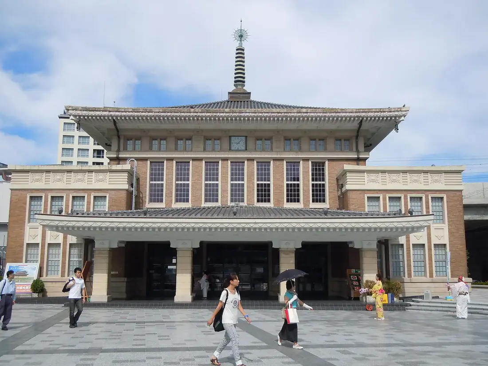
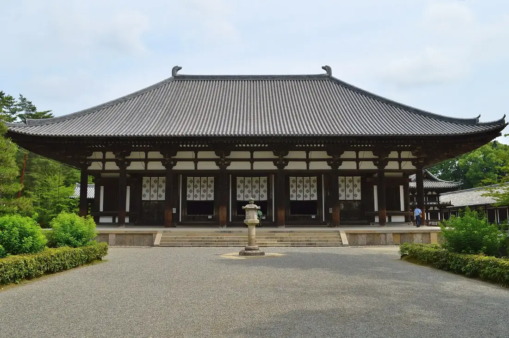
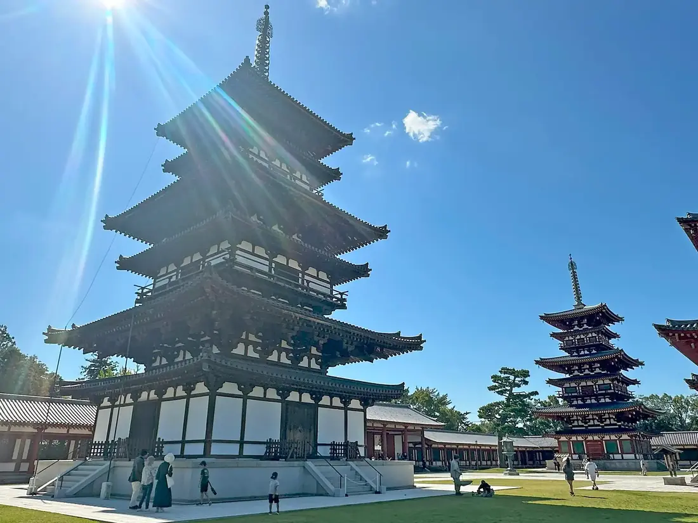
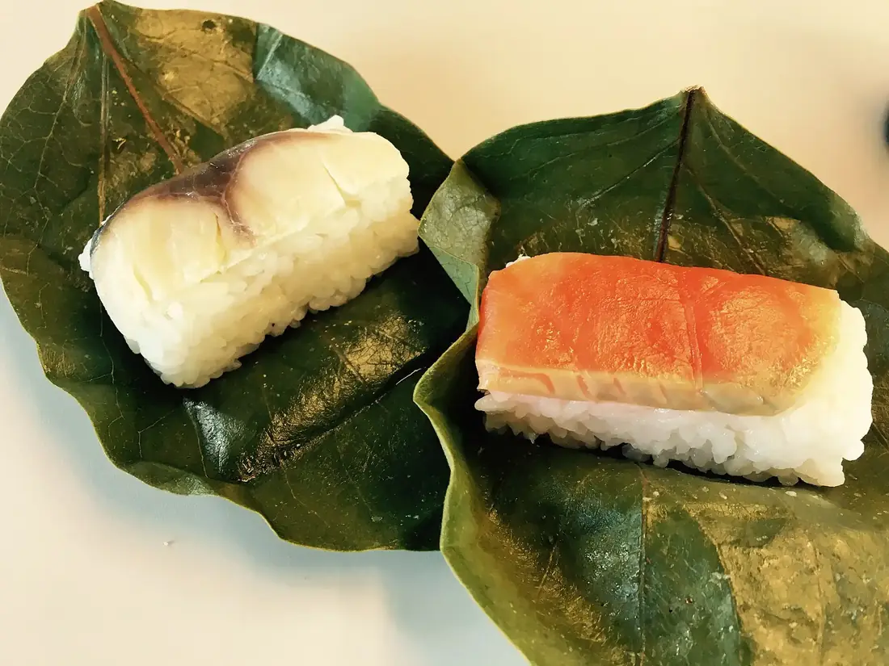
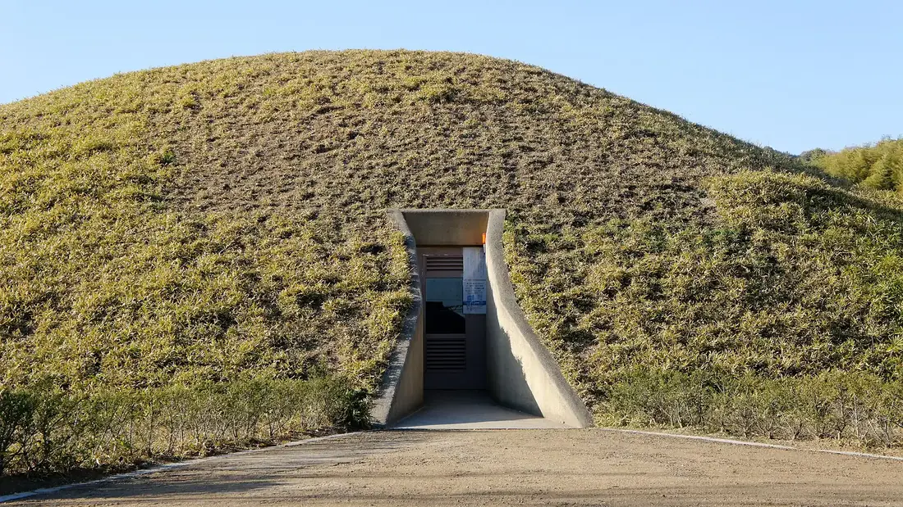
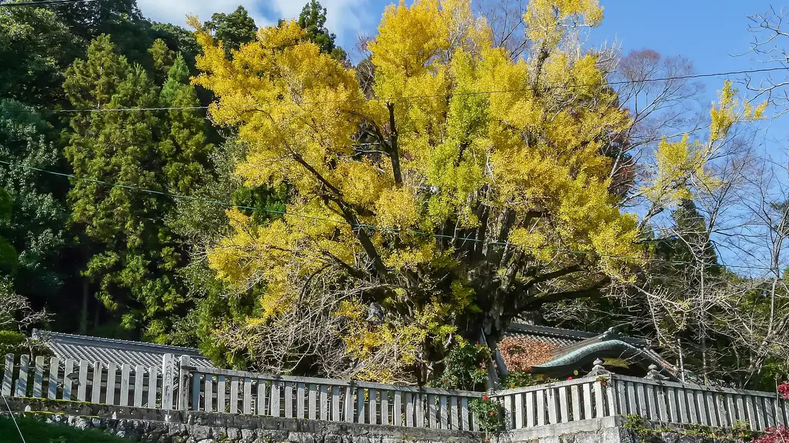

<title>弐日目 時代をさかのぼる日</title>
<meta name="claude:viewport-fit-sides" content="cover">
<link rel="preconnect" href="https://fonts.googleapis.com">
<link rel="preconnect" href="https://fonts.gstatic.com" crossorigin>
<link rel="stylesheet" href="https://fonts.googleapis.com/css2?family=Zen+Kaku+Gothic+New:wght@500;700&family=Zen+Old+Mincho:wght@500;700;900&display=swap">
<style>
:root {
  /* layout: an excavation section. the day is dug from the topsoil (2026) down through 天平・白鳳・飛鳥・古墳 to the 神話 layer;
     each stop sits in its own stratum, the ground darkens as the clock moves forward, and the 1585 stop is drawn as a 攪乱 (later intrusion).
     a single deliberate light-to-dark world, in the しおり's washi / sumi / shu family. */
  color-scheme: light;
  --washi: #F3EEE3; --card: #F8F5EE;
  --sumi: #1F1C18; --sumi-2: #4B463F; --sumi-3: #6A635A; --rule: rgba(31, 28, 24, .18);
  --shu: #C23A22; --shu-text: #A9321E; --on-shu: #FFFFFF;
  --kin: #9A7A2E; --kin-text: #6E5418;
  --ai: #1C3350; --ai-2: #2A4A6B; --on-ai: #F1ECE0; --on-ai-2: #C7CFD8;
  /* strata, newest to oldest */
  --s0: #F3EEE3; --s1: #EDE5D5; --s2: #E4D8C2; --s3: #D8C8AC; --s4: #CBB693; --s5: #BCA47F; --s6: #1C3350;
  --f-mincho: "Zen Old Mincho", "Hiragino Mincho ProN", "Yu Mincho", "YuMincho", "Noto Serif JP", serif;
  --f-goth: "Zen Kaku Gothic New", "Hiragino Sans", "Hiragino Kaku Gothic ProN", "Yu Gothic", "YuGothic", "Noto Sans JP", sans-serif;
  --ease: cubic-bezier(.22, .7, .2, 1);
}
*, *::before, *::after { box-sizing: border-box; }
html { scroll-behavior: smooth; scroll-padding-top: calc(env(safe-area-inset-top, 0px) + 64px); }
body { background: var(--washi); color: var(--sumi); font: 500 15px/2 var(--f-mincho); letter-spacing: .06em; -webkit-text-size-adjust: 100%; }
h1, h2, h3, h4 { margin: 0; font-weight: 700; line-height: 1.45; letter-spacing: .12em; text-wrap: balance; }
p, figure, ol, ul { margin: 0; }
a { color: inherit; }
img { display: block; max-width: 100%; height: auto; }
:focus-visible { outline: 2px solid var(--shu); outline-offset: 3px; }
.wrap { max-width: 1080px; margin-inline: auto; padding-left: max(16px, env(safe-area-inset-left, 0px)); padding-right: max(16px, env(safe-area-inset-right, 0px)); }
.goth { font-family: var(--f-goth); }
.num { font-variant-numeric: tabular-nums; }

/* ---------- sticky readout */
body::before { content: ""; position: fixed; inset: 0 0 auto; height: env(safe-area-inset-top, 0px); z-index: 10; background: var(--card); }
.bar { position: sticky; top: env(safe-area-inset-top, 0px); z-index: 9; background: color-mix(in srgb, var(--card) 94%, transparent); backdrop-filter: blur(6px); border-bottom: 1px solid var(--rule); }
.bar .wrap { display: flex; align-items: center; gap: 14px; min-height: 54px; padding-block: 6px; }
.seal-s { width: 32px; height: 32px; flex: none; display: grid; place-items: center; background: var(--shu); color: var(--on-shu); font: 900 17px/1 var(--f-mincho); border-radius: 3px; box-shadow: inset 0 0 0 2px rgba(255,255,255,.7), inset 0 0 0 4px var(--shu); }
.bar-t { font-size: 13px; font-weight: 700; letter-spacing: .18em; white-space: nowrap; }
.read { margin-left: auto; display: flex; align-items: baseline; gap: clamp(10px, 3vw, 22px); font-family: var(--f-goth); font-size: 11px; letter-spacing: .1em; color: var(--sumi-3); }
.read div { display: flex; align-items: baseline; gap: 6px; }
.read b { font: 700 16px/1 var(--f-mincho); color: var(--sumi); letter-spacing: .04em; font-variant-numeric: tabular-nums; transition: color .3s; }
.read .yr b { color: var(--shu-text); }
.read .era { font: 700 12px/1 var(--f-mincho); color: var(--sumi-2); letter-spacing: .2em; min-width: 3em; }
@media (max-width: 520px) { .bar-t { display: none; } .read { margin-left: auto; } }

/* ---------- opening */
.open { padding-block: clamp(40px, 8vw, 84px) clamp(28px, 5vw, 48px); }
.open-h { display: grid; grid-template-columns: auto minmax(0, 1fr); gap: 14px clamp(18px, 3vw, 30px); align-items: center; }
.seal { width: clamp(68px, 9vw, 90px); aspect-ratio: 1; display: grid; place-items: center; background: var(--shu); color: var(--on-shu); border-radius: 4px; font: 900 clamp(38px, 5vw, 54px)/1 var(--f-mincho); box-shadow: inset 0 0 0 2px rgba(255,255,255,.8), inset 0 0 0 6px var(--shu); }
.eyebrow { font-size: 13px; letter-spacing: .24em; color: var(--sumi-3); }
h1 .nb { display: inline-block; }
h1 { font-size: clamp(30px, 5.6vw, 52px); font-weight: 900; letter-spacing: .14em; }
.area { display: inline-block; margin-top: 4px; padding-bottom: 2px; border-bottom: 1px solid var(--sumi); font-weight: 700; font-size: 14px; letter-spacing: .16em; }
.thesis { margin-top: clamp(26px, 4vw, 40px); max-width: 38em; font-size: clamp(16px, 2vw, 18px); line-height: 2.1; }
.thesis em { font-style: normal; color: var(--shu-text); font-weight: 700; }
.facts { margin-top: 22px; display: flex; flex-wrap: wrap; gap: 8px 10px; list-style: none; padding: 0; font-family: var(--f-goth); font-size: 12.5px; letter-spacing: .04em; color: var(--sumi-2); }
.facts li { padding: 4px 12px; border: 1px solid var(--rule); background: var(--card); border-radius: 2px; }
.facts b { color: var(--sumi); }

/* ---------- chart */
.chart { margin-top: clamp(30px, 5vw, 50px); padding: clamp(16px, 3vw, 26px); background: var(--card); border: 1px solid var(--rule); border-radius: 2px; }
.chart-h { display: flex; flex-wrap: wrap; justify-content: space-between; align-items: baseline; gap: 4px 16px; }
.chart-h h2 { font-size: 17px; }
.chart-h p { font-family: var(--f-goth); font-size: 12px; color: var(--sumi-3); letter-spacing: .04em; }
.chart-box { margin-top: 10px; overflow-x: auto; }
.chart svg { display: block; width: 100%; min-width: 600px; height: auto; font-family: var(--f-goth); }
.chart .grid { stroke: var(--rule); stroke-width: 1; }
.chart .zero { stroke: var(--sumi-3); stroke-width: 1; stroke-dasharray: 2 3; }
.chart .ax { fill: var(--sumi-3); font-size: 11px; letter-spacing: .04em; }
.chart .myth { fill: var(--ai); opacity: .08; }
.chart .myth-l { fill: var(--ai-2); font-size: 11px; letter-spacing: .12em; }
.chart .ln { fill: none; stroke: var(--shu); stroke-width: 2; stroke-linejoin: round; stroke-linecap: round; }
.chart .ln-d { fill: none; stroke: var(--shu); stroke-width: 2; stroke-dasharray: 5 5; }
.chart .rng { stroke: var(--shu); stroke-width: 2; opacity: .35; stroke-linecap: round; }
.chart .dot { fill: var(--shu); stroke: var(--card); stroke-width: 2; }
.chart .dot-k { fill: var(--kin); stroke: var(--card); stroke-width: 2; }
.chart .ln-k { stroke: var(--kin); stroke-width: 1.5; stroke-dasharray: 3 3; fill: none; }
.chart .lb { fill: var(--sumi); font: 700 12px var(--f-mincho); letter-spacing: .08em; }
.chart .lb-y { fill: var(--sumi-3); font-size: 10.5px; }
.chart .hit { fill: transparent; cursor: default; }
.chart g.pt:hover .dot, .chart g.pt:focus .dot { r: 7; }
.chart-note { margin-top: 8px; font-family: var(--f-goth); font-size: 11.5px; line-height: 1.8; color: var(--sumi-3); }

/* ---------- strata */
.dig { position: relative; }
.layer { --bg: var(--s0); --prev: var(--s0); --ink: var(--sumi); --ink-2: var(--sumi-2); --ink-3: var(--sumi-3); --line: var(--rule); --panel: rgba(248, 245, 238, .72);
  position: relative; background: var(--bg); color: var(--ink); padding-block: clamp(54px, 8vw, 92px) clamp(40px, 6vw, 64px); }
.layer::before { content: ""; position: absolute; left: 0; right: 0; top: -1px; height: 18px; background: var(--prev);
  -webkit-mask: url("data:image/svg+xml;utf8,<svg xmlns='http://www.w3.org/2000/svg' viewBox='0 0 400 18' preserveAspectRatio='none'><path d='M0 0H400V7C370 12 352 4 322 9S268 15 236 8 180 3 150 10 92 14 60 7 18 6 0 10Z'/></svg>") 0 0 / 400px 18px repeat-x;
          mask: url("data:image/svg+xml;utf8,<svg xmlns='http://www.w3.org/2000/svg' viewBox='0 0 400 18' preserveAspectRatio='none'><path d='M0 0H400V7C370 12 352 4 322 9S268 15 236 8 180 3 150 10 92 14 60 7 18 6 0 10Z'/></svg>") 0 0 / 400px 18px repeat-x; }
.layer.first::before { display: none; }
/* grain: tiny stones in the soil */
.layer::after { content: ""; position: absolute; inset: 0; pointer-events: none; opacity: var(--grain, .0); mix-blend-mode: multiply;
  background-image: url("data:image/svg+xml;utf8,<svg xmlns='http://www.w3.org/2000/svg' width='180' height='180'><filter id='n'><feTurbulence type='fractalNoise' baseFrequency='.9' numOctaves='2' stitchTiles='stitch'/><feColorMatrix values='0 0 0 0 .35  0 0 0 0 .27  0 0 0 0 .16  0 0 0 .22 0'/></filter><rect width='100%' height='100%' filter='url(%23n)'/></svg>"); }
.layer > .wrap { position: relative; z-index: 1; }
.l-1 { --bg: var(--s1); --prev: var(--s0); --grain: .25; }
.l-2 { --bg: var(--s2); --prev: var(--s1); --grain: .35; }
.l-k { --bg: var(--s2); --prev: var(--s2); }
.l-3 { --bg: var(--s3); --prev: var(--s2); --grain: .45; --ink-3: #5A5248; }
.l-4 { --bg: var(--s4); --prev: var(--s3); --grain: .55; --ink-2: #3E3832; --ink-3: #4F473E; --line: rgba(31,28,24,.24); --panel: rgba(248,245,238,.6); }
.l-5 { --bg: var(--s5); --prev: var(--s4); --grain: .6; --ink-2: #2F2A25; --ink-3: #3E3730; --line: rgba(31,28,24,.28); --panel: rgba(248,245,238,.58); }
.l-6 { --bg: var(--s6); --prev: var(--s5); --ink: var(--on-ai); --ink-2: var(--on-ai-2); --ink-3: #A9B5C3; --line: rgba(241,236,224,.22); --panel: rgba(42,74,107,.55); }

.l-head { display: grid; grid-template-columns: minmax(0, 1fr) auto; align-items: end; gap: 8px 20px; padding-bottom: 14px; margin-bottom: clamp(24px, 4vw, 36px); border-bottom: 1px solid var(--line); }
.l-era { display: flex; align-items: baseline; gap: 14px; flex-wrap: wrap; }
.l-era h2 { font-size: clamp(24px, 3.6vw, 32px); font-weight: 900; letter-spacing: .3em; }
.l-era span { font-family: var(--f-goth); font-size: 12px; letter-spacing: .14em; color: var(--ink-3); }
.l-year { font: 900 clamp(34px, 6.4vw, 64px)/1 var(--f-mincho); letter-spacing: .02em; color: var(--ink); font-variant-numeric: tabular-nums; text-align: right; }
.l-year small { font-size: .36em; font-weight: 700; letter-spacing: .1em; margin-left: .2em; }
.l-6 .l-year { color: #E7C98A; }

.stop { display: grid; grid-template-columns: 92px minmax(0, 1fr); gap: 0 clamp(14px, 3vw, 32px); }
.stop + .stop { margin-top: clamp(40px, 6vw, 56px); padding-top: clamp(28px, 4vw, 40px); border-top: 1px dashed var(--line); }
.clock { font-variant-numeric: tabular-nums; }
.clock b { display: block; font: 700 26px/1.1 var(--f-mincho); letter-spacing: .02em; }
.clock span { display: block; margin-top: 6px; font-family: var(--f-goth); font-size: 11px; letter-spacing: .08em; color: var(--ink-3); line-height: 1.6; }
.body { display: grid; gap: 14px; min-width: 0; }
.has-ph .body { grid-template-columns: minmax(0, 1fr); }
@media (min-width: 860px) { .has-ph .body { grid-template-columns: minmax(0, 6fr) minmax(0, 5fr); column-gap: 32px; align-items: start; } .has-ph .ph { grid-column: 2; grid-row: 1 / span 6; } }
.s-head { display: flex; flex-wrap: wrap; align-items: center; gap: 6px 12px; }
.s-head h3 { font-size: clamp(21px, 2.8vw, 26px); letter-spacing: .14em; }
.chip { display: inline-flex; align-items: center; min-height: 24px; padding: 2px 10px; font: 700 11.5px/1 var(--f-goth); letter-spacing: .12em; border-radius: 2px; }
.chip-must { background: var(--shu); color: var(--on-shu); }
.chip-opt { border: 1px solid currentColor; color: var(--ink-2); }
.chip-food { background: var(--kin); color: #FFFDF7; }
.memo { font-family: var(--f-goth); font-size: 13.5px; line-height: 1.9; letter-spacing: .03em; color: var(--ink-2); max-width: 36em; }
.ph { position: relative; margin: 0; }
.ph img { width: 100%; aspect-ratio: 4 / 3; object-fit: cover; border-radius: 2px; outline: 1px solid var(--line); outline-offset: 6px; }
.ph figcaption { margin-top: 12px; font-family: var(--f-goth); font-size: 11px; letter-spacing: .1em; color: var(--ink-3); }

.hours { display: grid; gap: 6px; max-width: 30em; font-family: var(--f-goth); font-size: 11.5px; color: var(--ink-3); }
.hours-t { position: relative; height: 10px; border-radius: 5px; background: color-mix(in srgb, var(--ink) 9%, transparent); }
.hours-o { position: absolute; top: 0; bottom: 0; border-radius: 5px; background: color-mix(in srgb, var(--ink) 22%, transparent); }
.hours-v { position: absolute; top: -3px; bottom: -3px; border-radius: 3px; background: var(--shu); }
.hours-l { display: flex; justify-content: space-between; gap: 10px; flex-wrap: wrap; letter-spacing: .04em; }
.hours-l b { color: var(--ink); font-weight: 700; }
.warn { display: flex; gap: 8px; align-items: baseline; max-width: 36em; padding: 8px 12px; border-left: 3px solid var(--shu); background: var(--panel); font-family: var(--f-goth); font-size: 12.5px; line-height: 1.8; color: var(--ink); }
.warn b { flex: none; color: var(--shu-text); letter-spacing: .1em; }

.pt { max-width: 38em; padding: 16px 18px; background: var(--panel); border: 1px solid var(--line); border-radius: 2px; }
.pt-l { font: 700 11.5px/1.4 var(--f-goth); letter-spacing: .2em; color: var(--ink-3); margin-bottom: 6px; }
.pt p:not(.pt-l) { font-size: 14.5px; line-height: 2.05; }
.tie { display: inline-flex; flex-wrap: wrap; align-items: center; gap: 8px; margin-top: 10px; font-family: var(--f-goth); font-size: 12px; letter-spacing: .06em; color: var(--ink-2); }
.tie i { font-style: normal; display: inline-grid; place-items: center; width: 22px; height: 22px; background: var(--shu); color: var(--on-shu); font: 900 12px/1 var(--f-mincho); border-radius: 2px; }

.map { display: inline-flex; align-items: center; gap: 6px; min-height: 36px; padding: 4px 14px; border: 1px solid var(--line); background: var(--panel); color: var(--ink); text-decoration: none; font: 700 12px/1 var(--f-goth); letter-spacing: .08em; border-radius: 2px; justify-self: start; transition: background .25s, color .25s; }
.map:hover { background: var(--ink); color: var(--bg); }
.map svg { flex: none; }

/* the 1585 intrusion: a pit cut through the 白鳳 layer */
.kakuran { position: relative; margin-block: clamp(10px, 2vw, 18px); padding: clamp(20px, 3vw, 28px); background: #E9DDB8; border: 1.5px dashed var(--kin); border-radius: 2px 2px 40% 40% / 2px 2px 26px 26px; color: var(--sumi); }
.k-tag { display: flex; flex-wrap: wrap; align-items: baseline; gap: 6px 14px; margin-bottom: 16px; }
.k-tag b { font: 900 13px/1 var(--f-mincho); letter-spacing: .3em; color: var(--kin-text); }
.k-tag span { font-family: var(--f-goth); font-size: 11.5px; color: var(--sumi-3); letter-spacing: .06em; }
.kakuran .stop { --ink: var(--sumi); --ink-2: var(--sumi-2); --ink-3: #5E5640; --line: rgba(110, 84, 24, .3); --panel: rgba(255, 252, 242, .6); }
.kakuran .k-year { font: 900 clamp(26px, 4vw, 36px)/1 var(--f-mincho); color: var(--kin-text); font-variant-numeric: tabular-nums; }

/* lunch, a side pocket in the 飛鳥 layer */
.side { display: grid; grid-template-columns: 92px minmax(0, 1fr); gap: 0 clamp(14px, 3vw, 32px); margin-top: clamp(36px, 5vw, 48px); padding-top: clamp(24px, 4vw, 34px); border-top: 1px dashed var(--line); }
.side-in { display: grid; grid-template-columns: 120px minmax(0, 1fr); gap: 14px 18px; align-items: center; }
.side-in img { width: 120px; aspect-ratio: 1; object-fit: cover; border-radius: 50%; outline: 1px solid var(--line); outline-offset: 4px; }
.side-in h3 { font-size: 19px; }
@media (max-width: 480px) { .side-in { grid-template-columns: 84px minmax(0, 1fr); } .side-in img { width: 84px; } }

@media (max-width: 600px) {
  .stop, .side { grid-template-columns: minmax(0, 1fr); gap: 8px; }
  .clock { display: flex; align-items: baseline; gap: 10px; }
  .clock span { margin-top: 0; }
  .l-head { grid-template-columns: minmax(0, 1fr); }
  .l-year { text-align: left; }
}

/* ---------- arrival */
.arrive { background: var(--s6); color: var(--on-ai); padding-block: 0 clamp(48px, 8vw, 80px); }
.arrive-in { display: grid; grid-template-columns: 92px minmax(0, 1fr); gap: 0 clamp(14px, 3vw, 32px); padding-top: clamp(28px, 4vw, 40px); border-top: 1px solid rgba(241,236,224,.22); }
.arrive h3 { font-size: clamp(21px, 2.8vw, 26px); }
.arrive p { font-family: var(--f-goth); font-size: 13.5px; color: var(--on-ai-2); line-height: 1.9; max-width: 38em; }
.arrive .clock span { color: #A9B5C3; }
.next { margin-top: 18px; display: grid; gap: 6px; max-width: 38em; padding: 16px 18px; border: 1px solid rgba(241,236,224,.22); border-radius: 2px; }
.next b { font: 700 13px/1.4 var(--f-mincho); letter-spacing: .2em; color: #E7C98A; }
.changes { margin-top: clamp(36px, 5vw, 54px); padding-top: 18px; border-top: 1px solid rgba(241,236,224,.22); display: grid; gap: 8px; }
.changes h4 { font-size: 13px; letter-spacing: .24em; color: var(--on-ai-2); }
.changes ul { padding-left: 1.2em; font-family: var(--f-goth); font-size: 12.5px; line-height: 1.9; color: var(--on-ai-2); }
@media (max-width: 600px) { .arrive-in { grid-template-columns: minmax(0, 1fr); gap: 8px; } }

@media (prefers-reduced-motion: reduce) { html { scroll-behavior: auto; } * { transition: none !important; } }
</style>

<header class="bar" aria-label="現在地">
  <div class="wrap">
    <span class="seal-s" aria-hidden="true">弐</span>
    <span class="bar-t">十月十一日（日）</span>
    <div class="read" aria-live="polite">
      <div><span>時計</span><b id="r-clock">9:00</b></div>
      <div class="yr"><span>暦</span><b id="r-year">2026年</b></div>
      <div class="era" id="r-era">表土</div>
    </div>
  </div>
</header>

<main>
<section class="open" aria-labelledby="h1">
  <div class="wrap">
    <div class="open-h">
      <span class="seal" aria-hidden="true">弐</span>
      <div>
        <p class="eyebrow">二日目　十月十一日（日）</p>
        <h1 id="h1"><span class="nb">時代を</span><span class="nb">さかのぼる日</span></h1>
        <p class="area">西ノ京・斑鳩・葛城・橿原</p>
      </div>
    </div>
    <p class="thesis">時計は9:00から17:30へ進み、訪ねる場所は<em>759年</em>から<em>紀元前660年</em>へさかのぼります。地表から一層ずつ掘り下げるように、天平、白鳳、飛鳥、古墳の時代を抜けて、最後は神話の層にたどり着きます。</p>
    <ul class="facts">
      <li><b>9:00</b> JR奈良駅でレンタカー</li>
      <li><b>午前中</b>に西ノ京を抜ける（平城宮跡はライブ2日目）</li>
      <li><b>桜井</b>泊</li>
    </ul>

    <figure class="chart" aria-labelledby="chart-h">
      <div class="chart-h">
        <h2 id="chart-h">時計と暦</h2>
        <p>横は当日の時刻、縦は訪ねる場所の年代。右へ進むほど下へ、古くなる</p>
      </div>
      <div class="chart-box"><svg id="chart" viewBox="0 0 760 340" role="img" aria-label="時刻と年代の関係。9:20に759年の唐招提寺、10:15に680年の薬師寺、11:00に1585年の本家菊屋（寄り道）、11:30に607年の法隆寺、14:00に6世紀後半の藤ノ木古墳、15:20に5世紀の葛城一言主神社、16:20に紀元前660年の橿原神宮。"></svg></div>
      <figcaption class="chart-note">6世紀後半と5世紀は年代の幅を縦線で表示。紀元前660年は日本書紀の紀年で、考古学的な年代ではないため点線にしています。1585年の本家菊屋は図の上へはみ出す寄り道です。</figcaption>
    </figure>
  </div>
</section>

<div class="dig">

<!-- 表土 -->
<section class="layer first" data-clock="9:00" data-year="2026年" data-era="表土" aria-labelledby="e0">
  <div class="wrap">
    <div class="l-head">
      <div class="l-era"><h2 id="e0">表土</h2><span>出発点　令和八年</span></div>
      <p class="l-year">2026<small>年</small></p>
    </div>
    <article class="stop has-ph">
      <p class="clock"><b>9:00</b><span>出発</span></p>
      <div class="body">
        <div class="s-head"><h3>JR奈良駅</h3></div>
        <p class="memo">レンタカーで出発。この日も平城宮跡でライブ2日目があるので、周辺が混む前に西ノ京へ向かいます。</p>
        <a class="map" href="https://www.google.com/maps/search/?api=1&amp;query=JR%E5%A5%88%E8%89%AF%E9%A7%85" target="_blank" rel="noopener"><svg aria-hidden="true" viewBox="0 0 24 24" width="15" height="15"><path d="M12 21s-6.5-5.6-6.5-11a6.5 6.5 0 0 1 13 0c0 5.4-6.5 11-6.5 11z" fill="none" stroke="currentColor" stroke-width="1.6"/><circle cx="12" cy="10" r="2.2" fill="none" stroke="currentColor" stroke-width="1.6"/></svg>Googleマップで見る</a>
        <figure class="ph"><figcaption>旧JR奈良駅舎</figcaption></figure>
      </div>
    </article>
  </div>
</section>

<!-- 天平 -->
<section class="layer l-1" data-clock="9:20" data-year="759年" data-era="天平" aria-labelledby="e1">
  <div class="wrap">
    <div class="l-head">
      <div class="l-era"><h2 id="e1">天平</h2><span>奈良時代　鑑真が開く</span></div>
      <p class="l-year">759<small>年</small></p>
    </div>
    <article class="stop has-ph">
      <p class="clock"><b>9:20</b><span>〜10:15</span></p>
      <div class="body">
        <div class="s-head"><h3>唐招提寺</h3><span class="chip chip-must">必見</span></div>
        <p class="memo">奈良時代の金堂が残る唯一の寺。奥に鑑真の御廟と苔の庭。</p>
        <div class="hours" data-open="8:30" data-close="16:30" data-in="9:20" data-out="10:15"></div>
        <div class="pt">
          <p class="pt-l">歴史ファン的ポイント</p>
          <p>金堂は奈良時代の金堂として唯一の現存例です。さらに講堂は、平城宮の「東朝集殿」を移築したもの。平城宮の建物で今も残るのはこれだけなので、1日目の会場とつながります。</p>
          <p class="tie"><i aria-hidden="true">壱</i>1日目の朝堂院（ライブ会場）とつながる</p>
        </div>
        <a class="map" href="https://www.google.com/maps/search/?api=1&amp;query=%E5%94%90%E6%8B%9B%E6%8F%90%E5%AF%BA" target="_blank" rel="noopener"><svg aria-hidden="true" viewBox="0 0 24 24" width="15" height="15"><path d="M12 21s-6.5-5.6-6.5-11a6.5 6.5 0 0 1 13 0c0 5.4-6.5 11-6.5 11z" fill="none" stroke="currentColor" stroke-width="1.6"/><circle cx="12" cy="10" r="2.2" fill="none" stroke="currentColor" stroke-width="1.6"/></svg>Googleマップで見る</a>
        <figure class="ph"><figcaption>唐招提寺の金堂</figcaption></figure>
      </div>
    </article>
  </div>
</section>

<!-- 白鳳 + 攪乱 -->
<section class="layer l-2" data-clock="10:15" data-year="680年" data-era="白鳳" aria-labelledby="e2">
  <div class="wrap">
    <div class="l-head">
      <div class="l-era"><h2 id="e2">白鳳</h2><span>天武・持統の時代　天武天皇が発願</span></div>
      <p class="l-year">680<small>年</small></p>
    </div>
    <article class="stop has-ph">
      <p class="clock"><b>10:15</b><span>〜11:00<br>唐招提寺から徒歩約10分</span></p>
      <div class="body">
        <div class="s-head"><h3>薬師寺</h3><span class="chip chip-opt">セットで</span></div>
        <p class="memo">1300年前の東塔と真っ赤な西塔を見比べ。</p>
        <div class="hours" data-open="9:00" data-close="17:00" data-in="10:15" data-out="11:00"></div>
        <div class="pt">
          <p class="pt-l">歴史ファン的ポイント</p>
          <p>天武天皇が皇后（のちの持統天皇）の病気平癒を願って、藤原京に建て始めた寺です。遷都で今の場所に移りました。金堂の薬師三尊は、藤原京から運んだのか平城京で新しく鋳造したのか、明治以来の大論争があります。東塔の先端の水煙には、笛を吹く天人が透かし彫りで表されています。</p>
        </div>
        <a class="map" href="https://www.google.com/maps/search/?api=1&amp;query=%E8%96%AC%E5%B8%AB%E5%AF%BA%20%E5%A5%88%E8%89%AF" target="_blank" rel="noopener"><svg aria-hidden="true" viewBox="0 0 24 24" width="15" height="15"><path d="M12 21s-6.5-5.6-6.5-11a6.5 6.5 0 0 1 13 0c0 5.4-6.5 11-6.5 11z" fill="none" stroke="currentColor" stroke-width="1.6"/><circle cx="12" cy="10" r="2.2" fill="none" stroke="currentColor" stroke-width="1.6"/></svg>Googleマップで見る</a>
        <figure class="ph"><figcaption>薬師寺の東塔と西塔</figcaption></figure>
      </div>
    </article>
  </div>
</section>

<section class="layer l-k" data-clock="11:00" data-year="1585年" data-era="攪乱" aria-labelledby="ek">
  <div class="wrap">
    <div class="kakuran">
      <p class="k-tag"><b id="ek">攪乱</b><span>古い層に後の時代が割り込んだ跡。ここだけ戦国時代への寄り道です</span></p>
      <article class="stop">
        <p class="clock"><b>11:00</b><span>〜11:30</span></p>
        <div class="body">
          <div class="s-head"><h3>本家菊屋 本店</h3><span class="chip chip-food">お土産</span></div>
          <p class="k-year">1585年<span class="goth" style="font-size:12px;letter-spacing:.1em;margin-left:.6em;color:var(--sumi-3)">創業</span></p>
          <p class="memo">お城之口餅は、2026年の大河ドラマの主人公・豊臣秀長ゆかり。</p>
          <div class="pt">
            <p class="pt-l">歴史ファン的ポイント</p>
            <p>1585年、豊臣秀長が郡山城に入ったときに納めたのが始まりと伝わります。秀長が主人公の2026年の大河ドラマを見ていれば、その秀長が兄をもてなした味を食べられます。</p>
          </div>
          <a class="map" href="https://www.google.com/maps/search/?api=1&amp;query=%E6%9C%AC%E5%AE%B6%E8%8F%8A%E5%B1%8B%20%E6%9C%AC%E5%BA%97%20%E5%A4%A7%E5%92%8C%E9%83%A1%E5%B1%B1" target="_blank" rel="noopener"><svg aria-hidden="true" viewBox="0 0 24 24" width="15" height="15"><path d="M12 21s-6.5-5.6-6.5-11a6.5 6.5 0 0 1 13 0c0 5.4-6.5 11-6.5 11z" fill="none" stroke="currentColor" stroke-width="1.6"/><circle cx="12" cy="10" r="2.2" fill="none" stroke="currentColor" stroke-width="1.6"/></svg>Googleマップで見る</a>
        </div>
      </article>
    </div>
  </div>
</section>

<!-- 飛鳥 -->
<section class="layer l-3" data-clock="11:30" data-year="607年" data-era="飛鳥" aria-labelledby="e3">
  <div class="wrap">
    <div class="l-head">
      <div class="l-era"><h2 id="e3">飛鳥</h2><span>推古天皇・聖徳太子の時代　法隆寺創建</span></div>
      <p class="l-year">607<small>年</small></p>
    </div>
    <article class="stop has-ph">
      <p class="clock"><b>11:30</b><span>〜13:00</span></p>
      <div class="body">
        <div class="s-head"><h3>法隆寺</h3><span class="chip chip-must">必見</span></div>
        <p class="memo">世界最古の木造建築。大宝蔵院の百済観音も。</p>
        <div class="hours" data-open="8:00" data-close="16:30" data-in="11:30" data-out="13:00"></div>
        <div class="pt">
          <p class="pt-l">歴史ファン的ポイント</p>
          <p>日本書紀には670年に全焼したとあり、「今の建物は太子の時代のものか、再建か」という論争が続きました。決着したのは1939年、南東の「若草伽藍」の発掘で再建とわかったときです。それでも五重塔の心柱は年輪で594年伐採と出ていて、なぜ古い木材が使われたのかは今も謎です。</p>
        </div>
        <a class="map" href="https://www.google.com/maps/search/?api=1&amp;query=%E6%B3%95%E9%9A%86%E5%AF%BA" target="_blank" rel="noopener"><svg aria-hidden="true" viewBox="0 0 24 24" width="15" height="15"><path d="M12 21s-6.5-5.6-6.5-11a6.5 6.5 0 0 1 13 0c0 5.4-6.5 11-6.5 11z" fill="none" stroke="currentColor" stroke-width="1.6"/><circle cx="12" cy="10" r="2.2" fill="none" stroke="currentColor" stroke-width="1.6"/></svg>Googleマップで見る</a>
        <figure class="ph"><figcaption>法隆寺の金堂と五重塔</figcaption></figure>
      </div>
    </article>
    <article class="side" data-clock="13:00" data-year="607年" data-era="飛鳥">
      <p class="clock"><b>13:00</b><span>〜14:00</span></p>
      <div class="side-in">
        
        <div class="body">
          <div class="s-head"><h3>平宗 法隆寺店</h3><span class="chip chip-food">ランチ</span></div>
          <p class="memo">柿の葉寿司。土日は17:00まで。</p>
          <a class="map" href="https://www.google.com/maps/search/?api=1&amp;query=%E5%B9%B3%E5%AE%97%20%E6%B3%95%E9%9A%86%E5%AF%BA%E5%BA%97" target="_blank" rel="noopener"><svg aria-hidden="true" viewBox="0 0 24 24" width="15" height="15"><path d="M12 21s-6.5-5.6-6.5-11a6.5 6.5 0 0 1 13 0c0 5.4-6.5 11-6.5 11z" fill="none" stroke="currentColor" stroke-width="1.6"/><circle cx="12" cy="10" r="2.2" fill="none" stroke="currentColor" stroke-width="1.6"/></svg>Googleマップで見る</a>
        </div>
      </div>
    </article>
  </div>
</section>

<!-- 古墳後期 -->
<section class="layer l-4" data-clock="14:00" data-year="6世紀後半" data-era="古墳後期" aria-labelledby="e4">
  <div class="wrap">
    <div class="l-head">
      <div class="l-era"><h2 id="e4">古墳後期</h2><span>古墳時代　未盗掘の円墳</span></div>
      <p class="l-year">6<small>世紀後半</small></p>
    </div>
    <article class="stop has-ph">
      <p class="clock"><b>14:00</b><span>〜15:20<br>法隆寺から徒歩5〜10分</span></p>
      <div class="body">
        <div class="s-head"><h3>藤ノ木古墳</h3><span class="chip chip-opt">追加</span></div>
        <p class="memo">豪華な金銅の馬具が出た未盗掘の円墳。</p>
        <p class="warn"><b>注意</b>石室の中は公開日のみ。外からの見学が基本です</p>
        <div class="pt">
          <p class="pt-l">歴史ファン的ポイント</p>
          <p>1980年代の発掘で、未盗掘の石棺から金銅の冠や豪華な馬具が出て大ニュースになりました。棺には男性二人が一緒に葬られています。後継争いで蘇我馬子に殺された穴穂部皇子と宅部皇子ではないかという説が有力で、3日目の石舞台古墳（馬子の墓）と物語がつながります。</p>
          <p class="tie"><i aria-hidden="true">参</i>3日目の石舞台古墳とつながる</p>
        </div>
        <a class="map" href="https://www.google.com/maps/search/?api=1&amp;query=%E8%97%A4%E3%83%8E%E6%9C%A8%E5%8F%A4%E5%A2%B3" target="_blank" rel="noopener"><svg aria-hidden="true" viewBox="0 0 24 24" width="15" height="15"><path d="M12 21s-6.5-5.6-6.5-11a6.5 6.5 0 0 1 13 0c0 5.4-6.5 11-6.5 11z" fill="none" stroke="currentColor" stroke-width="1.6"/><circle cx="12" cy="10" r="2.2" fill="none" stroke="currentColor" stroke-width="1.6"/></svg>Googleマップで見る</a>
        <figure class="ph"><figcaption>藤ノ木古墳</figcaption></figure>
      </div>
    </article>
  </div>
</section>

<!-- 古墳中期 -->
<section class="layer l-5" data-clock="15:20" data-year="5世紀" data-era="古墳中期" aria-labelledby="e5">
  <div class="wrap">
    <div class="l-head">
      <div class="l-era"><h2 id="e5">古墳中期</h2><span>雄略天皇の時代　葛城氏の本拠地</span></div>
      <p class="l-year">5<small>世紀</small></p>
    </div>
    <article class="stop has-ph">
      <p class="clock"><b>15:20</b><span>〜16:20</span></p>
      <div class="body">
        <div class="s-head"><h3>葛城一言主神社</h3><span class="chip chip-opt">好みで</span></div>
        <p class="memo">一言だけなら願いが叶う。樹齢1200年の大イチョウ。</p>
        <p class="warn"><b>先に</b>社務所は16時前に閉まります。御朱印やお守りは着いてすぐに</p>
        <div class="pt">
          <p class="pt-l">歴史ファン的ポイント</p>
          <p>古事記には、雄略天皇が葛城山で自分とそっくりの行列に出会う話があります。相手が「善いことも悪いことも一言で言い放つ神」と名乗ると、天皇は弓矢や衣を差し出して拝んだといいます。蘇我氏以前に大王家と肩を並べた豪族、葛城氏の本拠地でもあります。</p>
        </div>
        <a class="map" href="https://www.google.com/maps/search/?api=1&amp;query=%E8%91%9B%E5%9F%8E%E4%B8%80%E8%A8%80%E4%B8%BB%E7%A5%9E%E7%A4%BE" target="_blank" rel="noopener"><svg aria-hidden="true" viewBox="0 0 24 24" width="15" height="15"><path d="M12 21s-6.5-5.6-6.5-11a6.5 6.5 0 0 1 13 0c0 5.4-6.5 11-6.5 11z" fill="none" stroke="currentColor" stroke-width="1.6"/><circle cx="12" cy="10" r="2.2" fill="none" stroke="currentColor" stroke-width="1.6"/></svg>Googleマップで見る</a>
        <figure class="ph"><figcaption>葛城一言主神社の大イチョウ</figcaption></figure>
      </div>
    </article>
  </div>
</section>

<!-- 神話 -->
<section class="layer l-6" data-clock="16:20" data-year="前660年" data-era="神話" aria-labelledby="e6">
  <div class="wrap">
    <div class="l-head">
      <div class="l-era"><h2 id="e6">神話</h2><span>日本書紀の紀年　神武天皇即位</span></div>
      <p class="l-year"><small style="margin:0 .2em 0 0">紀元前</small>660</p>
    </div>
    <article class="stop">
      <p class="clock"><b>16:20</b><span>〜17:30</span></p>
      <div class="body">
        <div class="s-head"><h3>橿原神宮</h3><span class="chip chip-opt">好みで</span></div>
        <p class="memo">18:00まで。畝傍山を背にした巨大な外拝殿。</p>
        <div class="hours" data-close="18:00" data-in="16:20" data-out="17:30"></div>
        <div class="pt">
          <p class="pt-l">歴史ファン的ポイント</p>
          <p>日本書紀で神武天皇が即位したとされる「橿原宮」の地に、1890年に創建されました。本殿は京都御所の賢所を移したものです。古代の神話が近代国家にどう使われたかを体感できる場所です。</p>
        </div>
        <a class="map" href="https://www.google.com/maps/search/?api=1&amp;query=%E6%A9%BF%E5%8E%9F%E7%A5%9E%E5%AE%AE" target="_blank" rel="noopener"><svg aria-hidden="true" viewBox="0 0 24 24" width="15" height="15"><path d="M12 21s-6.5-5.6-6.5-11a6.5 6.5 0 0 1 13 0c0 5.4-6.5 11-6.5 11z" fill="none" stroke="currentColor" stroke-width="1.6"/><circle cx="12" cy="10" r="2.2" fill="none" stroke="currentColor" stroke-width="1.6"/></svg>Googleマップで見る</a>
      </div>
    </article>
  </div>
</section>

</div>

<section class="arrive" data-clock="17:30" data-year="—" data-era="宿" aria-labelledby="ea">
  <div class="wrap">
    <div class="arrive-in">
      <p class="clock"><b>17:30</b><span>到着</span></p>
      <div>
        <h3 id="ea">桜井の宿へ</h3>
        <p>神話の層まで掘ったところで今日はおしまい。</p>
        <div class="next">
          <b>参　三日目へ</b>
          <p>桜井から飛鳥へ。蘇我氏の栄華（飛鳥寺・石舞台）と滅亡（入鹿の首塚・談山）を半日でたどり、藤ノ木古墳の二人の皇子の話の続きを見に行きます。</p>
        </div>
        <div class="changes">
          <h4>元の計画からの変更</h4>
          <ul>
            <li>高鴨神社と神武天皇陵を外した</li>
            <li>藤ノ木古墳を足した</li>
          </ul>
        </div>
      </div>
    </div>
  </div>
</section>
</main>

<script>
(function () {
  var toMin = function (t) { var p = t.split(':'); return +p[0] * 60 + +p[1]; };

  /* opening-hours strips: 8:00–18:00 track */
  var T0 = toMin('8:00'), T1 = toMin('18:00'), pct = function (m) { return ((m - T0) / (T1 - T0) * 100).toFixed(2) + '%'; };
  document.querySelectorAll('.hours').forEach(function (el) {
    var o = el.dataset.open, c = el.dataset.close, a = toMin(el.dataset.in), b = toMin(el.dataset.out);
    var om = o ? toMin(o) : T0, cm = toMin(c);
    var left = cm - b, h = Math.floor(left / 60), m = left % 60;
    var spare = (h ? h + '時間' : '') + (m ? m + '分' : '');
    el.innerHTML =
      '<div class="hours-t" aria-hidden="true">' +
        '<span class="hours-o" style="left:' + pct(om) + ';right:calc(100% - ' + pct(cm) + ')' + (o ? '' : ';border-radius:0 5px 5px 0;-webkit-mask:linear-gradient(90deg,transparent,#000 40%);mask:linear-gradient(90deg,transparent,#000 40%)') + '"></span>' +
        '<span class="hours-v" style="left:' + pct(a) + ';right:calc(100% - ' + pct(b) + ')"></span>' +
      '</div>' +
      '<p class="hours-l num"><span>' + (o ? '拝観 <b>' + o + '〜' + c + '</b>' : '<b>〜' + c + '</b>') + '</span>' +
      '<span>滞在 <b>' + el.dataset.in + '〜' + el.dataset.out + '</b>（閉門まで' + spare + '）</span></p>';
  });

  /* chart: clock (x) vs year (y), one linear scale per axis */
  var svg = document.getElementById('chart'), NS = 'http://www.w3.org/2000/svg';
  var W = 760, H = 340, L = 56, R = 24, Tp = 30, B = 34;
  var X0 = toMin('9:00'), X1 = toMin('17:30'), Y0 = 800, Y1 = -700;
  var x = function (t) { return L + (toMin(t) - X0) / (X1 - X0) * (W - L - R); };
  var y = function (v) { return Tp + (Y0 - v) / (Y0 - Y1) * (H - Tp - B); };
  var mk = function (tag, a, txt) { var e = document.createElementNS(NS, tag); for (var k in a) e.setAttribute(k, a[k]); if (txt != null) e.textContent = txt; return e; };
  var add = function (e, p) { (p || svg).appendChild(e); return e; };

  add(mk('rect', { class: 'myth', x: L, y: y(-100), width: W - L - R, height: y(Y1) - y(-100) }));
  add(mk('text', { class: 'myth-l', x: L + 8, y: y(Y1) - 8 }, '神話の年代（日本書紀）'));
  [800, 600, 400, 200, 0, -200, -400, -600].forEach(function (v) {
    add(mk('line', { class: v === 0 ? 'zero' : 'grid', x1: L, x2: W - R, y1: y(v), y2: y(v) }));
    add(mk('text', { class: 'ax num', x: L - 8, y: y(v) + 4, 'text-anchor': 'end' }, v === 0 ? '紀元' : v < 0 ? '前' + (-v) : v));
  });
  for (var hr = 9; hr <= 17; hr++) {
    add(mk('text', { class: 'ax num', x: x(hr + ':00'), y: H - 10, 'text-anchor': 'middle' }, hr + ':00'));
  }

  var P = [
    { t: '9:20', v: 759, n: '唐招提寺', y: '759年', dx: 6, dy: -26 },
    { t: '10:15', v: 680, n: '薬師寺', y: '680年', dx: 8, dy: 18 },
    { t: '11:30', v: 607, n: '法隆寺', y: '607年', dx: 8, dy: -30 },
    { t: '14:00', v: 575, lo: 550, hi: 600, n: '藤ノ木古墳', y: '6世紀後半', dx: -8, dy: -32, end: true },
    { t: '15:20', v: 450, lo: 400, hi: 500, n: '一言主神社', y: '5世紀', dx: 10, dy: 4 },
    { t: '16:20', v: -660, n: '橿原神宮', y: '紀元前660年', dx: -10, dy: -12, end: true }
  ];
  var d = P.slice(0, 5).map(function (p, i) { return (i ? 'L' : 'M') + x(p.t).toFixed(1) + ' ' + y(p.v).toFixed(1); }).join(' ');
  add(mk('path', { class: 'ln', d: d }));
  add(mk('path', { class: 'ln-d', d: 'M' + x('15:20') + ' ' + y(450) + ' L' + x('16:20') + ' ' + y(-660) }));

  /* 1585: off the top of the scale */
  var kx = x('11:00');
  add(mk('path', { class: 'ln-k', d: 'M' + x('10:15') + ' ' + y(680) + ' L' + kx + ' ' + (Tp + 4) + ' L' + x('11:30') + ' ' + y(607) }));
  add(mk('path', { d: 'M' + (kx - 5) + ' ' + (Tp + 6) + ' L' + kx + ' ' + (Tp - 2) + ' L' + (kx + 5) + ' ' + (Tp + 6), fill: 'none', stroke: 'var(--kin)', 'stroke-width': 1.5 }));
  var kg = add(mk('g', { class: 'pt', tabindex: 0 }));
  add(mk('title', {}, '11:00 本家菊屋 1585年（寄り道）'), kg);
  add(mk('text', { class: 'lb', x: kx + 8, y: Tp - 12, fill: 'var(--kin-text)', style: 'fill:var(--kin-text)' }, '本家菊屋 1585年 ↑ 寄り道'), kg);

  P.forEach(function (p) {
    var g = add(mk('g', { class: 'pt', tabindex: 0 }));
    add(mk('title', {}, p.t + ' ' + p.n + '　' + p.y), g);
    if (p.lo != null) add(mk('line', { class: 'rng', x1: x(p.t), x2: x(p.t), y1: y(p.hi), y2: y(p.lo) }), g);
    add(mk('circle', { class: 'hit', cx: x(p.t), cy: y(p.v), r: 16 }), g);
    add(mk('circle', { class: 'dot', cx: x(p.t), cy: y(p.v), r: 5 }), g);
    var anchor = p.end ? 'end' : 'start';
    add(mk('text', { class: 'lb', x: x(p.t) + p.dx, y: y(p.v) + p.dy, 'text-anchor': anchor }, p.n), g);
    add(mk('text', { class: 'lb-y ax', x: x(p.t) + p.dx, y: y(p.v) + p.dy + 14, 'text-anchor': anchor }, p.y), g);
  });

  /* sticky readout follows the layer under the bar */
  var rc = document.getElementById('r-clock'), ry = document.getElementById('r-year'), re = document.getElementById('r-era');
  var marks = Array.prototype.slice.call(document.querySelectorAll('[data-clock]'));
  var tick = function () {
    var line = 90, cur = null;
    marks.forEach(function (m) { if (m.getBoundingClientRect().top <= line) cur = m; });
    cur = cur || marks[0];
    if (rc.textContent !== cur.dataset.clock) { rc.textContent = cur.dataset.clock; ry.textContent = cur.dataset.year; re.textContent = cur.dataset.era; }
  };
  var raf = 0;
  window.addEventListener('scroll', function () { if (!raf) raf = requestAnimationFrame(function () { raf = 0; tick(); }); }, { passive: true });
  tick();
})();
</script>
